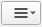
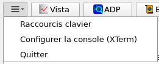

Ce bouton donne un accès rapide à quelques documentations concernant la
manipulation de aito et permet de quitter aito :

La plupart des raccourcis clavier habituels sont actifs.
Pour zoomer utiliser le raccourcis habituel : [Ctrl]+[+]
Pour dézoomer utiliser le raccourcis habituel : [Ctrl]+[-]